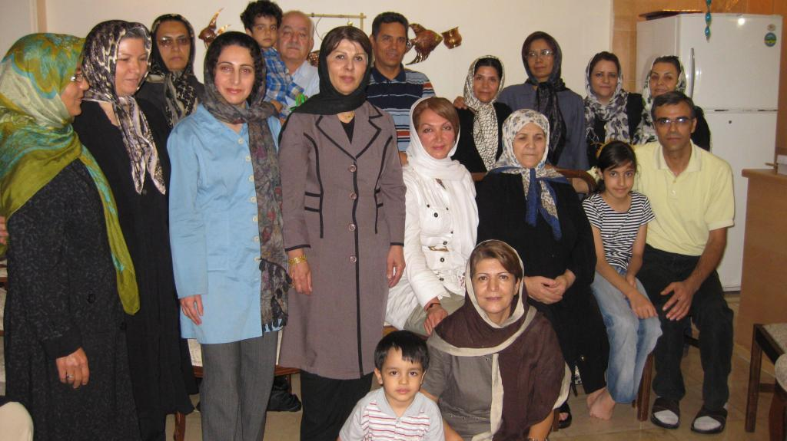
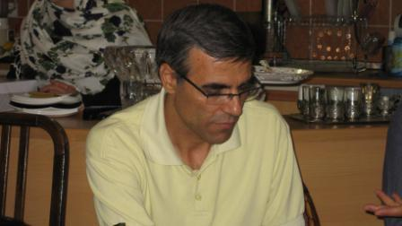
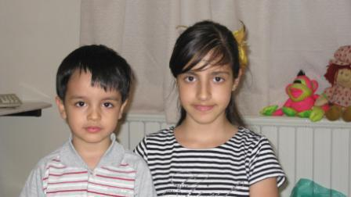

|
|
وضعیت نسرین ستوده در اعتصاب غذا و سلول انفرادی،نگران کننده و خطرناک است
گفتگو با رضا خندان- همسر نسرین ستوده- در روز جهانی کودک
جمعه16 مهر 1389
تغییر برای برابری : روز جهانی کودک است و از حقوق کودک خبری نیست ، فعالان حقوق کودک در زندان ها گرفتارند و حتی اجازه ملاقات یا تلفن به فرزندان خود را هم ندارند. نسرین ستوده ، حقوقدان ، فعال حقوق زنان ، فعال حقوق کودکان و وکیل بسیاری ازمتهمان دفاع از حقوق بشر و کودکان مجرم و قربانی جامعه ناسالم ، یکی از این زندانیان است.

با رضا خندان همسر نسرین ستوده به گفتگو نشسته ایم و از آخرین وضعیت ایشان می پرسیم .
می گوید : دیروز چهارشنبه 14 مهر، نسرین یک تلفن چند ثانیه ای داشت که بسیار نگران کننده بود . او گفت من از 3 مهر ماه در اعتصاب غذا هستم و تا گفت مرا تهدید...تلفن قطع شد و من به شدت ناراحت شدم . من حدس می زدم او در اعتصاب غذا باشد و اعلام هم کرده بودم ، چون در تنها تلفن چند دقیقه ای که از او داشتم گفته بود اگر نگذارند من حداقل چهار روز یکبار به خانه تلفن بزنم و از حال بچه ها جویا شوم اعتصاب غذا خواهم کرد .و متاسفانه آقایان، حداقل حق یک زندانی که تلفن است را هم به او ندادند و او مجبور به اعتصاب غذا شده است و در سلول انفرادی این وضعیت بسیار نگران کننده و خطرناک است .

آخرین پیگیری شما و پاسخ مسوولان چه بوده است ؟
بعد از تلفن نسرین امروز پنج شنبه که روز ملاقات بند 209 زندان اوین است به سالن ملاقات اوین مراجعه کردم و تقاضای ملاقات دادم ک، گفتند او ممنوع الاملاقات است . چاره ای نداشتم و جای دیگری نمی توانستم مراجعه کنم ، چون 5شنبه و جمعه نهاد های مربوطه تعطیل است . نامه هایی برای رئیس قوه قضائیه –رئیس ستاد حقوق شهروندی – کانون وکلا – اتحادیه کانون های وکلا و دادستان تهران نوشته ام که شنبه همه را به جریان خواهم انداخت .
از صدای خانم ستوده در همان چند ثانیه حال جسمی و روحی ایشان را می توانید حدس بزنید؟ صدای شان ضعیف بود؟
صدای شان ضعیف نبود چون ایشان این قدرت را دارند که با صدای قوی و محکم همیشه صحبت کنند ولی بسیار عصبی بودند و نشان می داد درگیر مسائلی هستند. با شناختی که من از ایشان دارم حتمن از روحیه ی بالایی برخوردارند ولی اعتصاب غذا برای ایشان خیلی خطرناک است و چیزی که مرا اذیت می کند این است که من به بازپرس پرونده ایشان در چهارشنبه 7 مهر گفتم که نگران هستم خانم ستوده در اعتصاب غذا باشد و بازپرس گفت : خیر . شاید شما از قبل ، قرار و مداری گذاشته باشید ولی ایشان در اعتصاب غذا نیستند و حالشان هم خیلی خوب است . در حالی که ایشان فقط بخاطر اینکه اجازه نمی دهند حتی با تلفن از حال بچه هایش با خبر شود دست به اعتصاب زده .
من به بازپرس پرونده گفتم نگران ام خانم ستوده مثل خانم نرگس محمدی سالم از زندان مرخص نشوند و او گفت خانم محمدی از قبل بیمار بوده و دلیلی برای نگرانی شما نیست در حالی که همان ساعت نسرین در اعتصاب غذا بوده . بهر حال من گفتم او سالم خودش را به دادسرا معرفی کرده و الان من نگران حالش هستم و او را سالم از شما می خواهم .
وضعیت فرزندانتان ، نیما و مهرآوه عزیز، چطور است ؟

بچه ها خیلی ناراحت هستند . نیما ، بهانه مادرش را می گیرد و عصبی شده است و مهرآوه ، ضمن اینکه خودش غمگین و افسرده شده ، نیما را آرام کند. من مطمئن هستم همسرم تبرئه خواهد شد چون هیچ عمل خلاف قانونی انجام نداده فقط می خواهم بدانم خسارت روحی و روانی که این مدت خانوداه دیده اند را چه کسی پرداخت خواهد کرد . اصلن قابل جبران هست ؟ به هیچ قیمتی این خسارت ها قابل جبران نیست .
اصلن برفرض که نسرین یک مجرم است . آیا یک مجرم حق تلفن ندارد ، حق ملاقات ندارد ؟
البته من اصلن فکر نمی کردم بتوانم بچه ها را با این همه مشغله کاری اداره کنم ولی به کمک مادرم و دوستان خوشبختانه تا حالا توانسته ام. دوستان ما را خیلی مورد لطف قرار می دهند بخصوص همکاران نسرین ما را هیچ روزی تنها نگذاشته اند وبزرگترین شانس ما همین دوستان و آشنایان و موکل های ایشان هستند که با دل و جان و با عشق و علاقه در کنار ما هستند وگرنه این روز ها برای بچه ها قابل تحمل نبود.